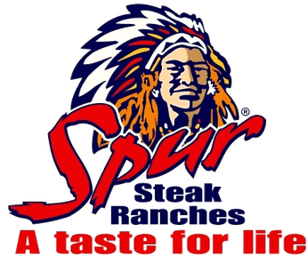
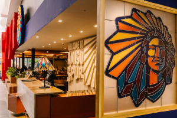
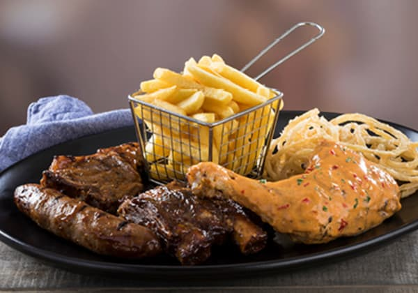
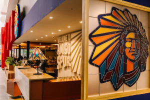
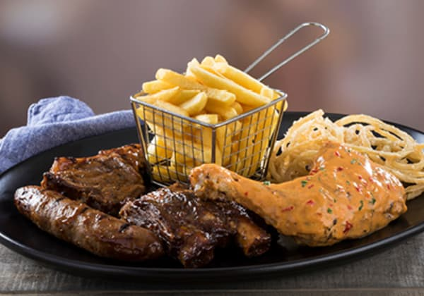

Since 1967, when founder, Allen Ambor, opened the Golden Spur in Newlands, Cape Town, Spur Steak Ranches have been part of the South African family. In the years since then, Spur has helped to create countless special memories and earned a reputation for tasty, nutritious, value-for-money meals. We’ve also grown into an internationally recognised brand with many local and international restaurants. So, what’s our recipe for success? Simple: a warm, relaxed, family-friendly environment; generous portions of great-tasting food; and a hearty helping of quality!
Trading hours
- Mon-Fri : 08:00h - 18:00h
- Sat : 07:00h - 21:00h
- Sun : 09:00h - 10:00h